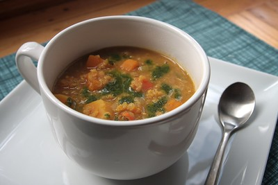

Curried Squash and Red Lentil Soup
Delicious, warming curried squash and red lentil soup.
The recipe
Description
The perfect fall and winter soup.
Ingredients
- 3 tablespoons olive oil
- 2 tablespoons butter or margarine
- 1.5 lbs butternut squash, peeled and cut into 1/2-inch pieces
- 1 large onion, chopped
- 1 carrot, chopped
- 1 celery stalk, chopped
- 2 cloves garlic, finely chopped
- 2 tbsp grated ginger
- 1 tsp salt
- 1/4 tsp black pepper
- 1 tbsp curry powder
- 1 cup red lentils
- 4 cups water
- 1 tsp lemon juice
Steps
- Melt the butter or margarine with olive oil in a 5 quart pot over medium high heat until the foam subsides.
- Add the squash, onions, garlic, carrots, celery, and grated ginger to the pot with 1/2 teaspoon of kosher and cook until browned-about 15 to 20 minutes.
- Stir in the curry powder & black pepper and cook for 2 minutes.
- Add the lentils and water and simmer, covered, for 25 to 40 minutes or until lentils are tender.
- Stir in lemon juice and season with salt & pepper.
Notes
Makes about 6 servings I think.